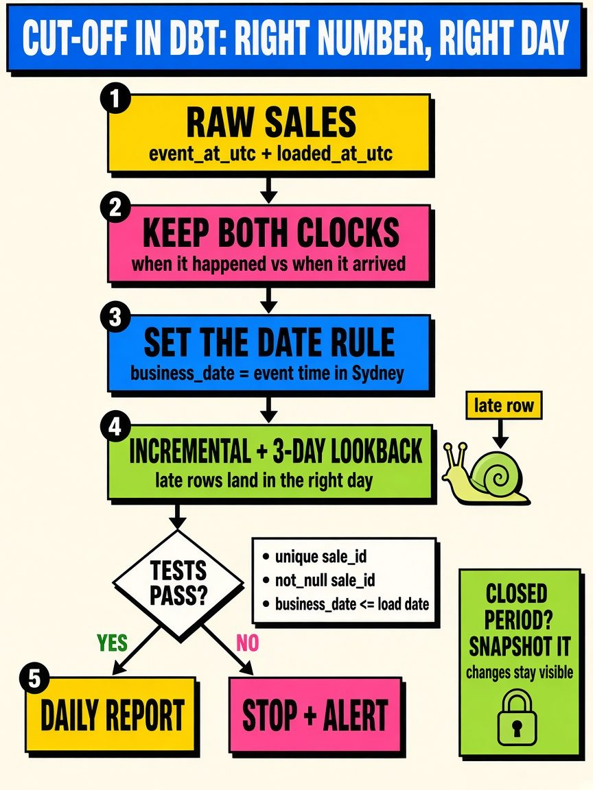

Which Day Does It Belong To?
In accounting there's a quiet little test that catches a lot of mistakes: cut-off. The question isn't "did this happen?" It's "did it happen in this period?" An invoice dated 30 June that gets entered on 2 July is real money, but if it lands in July, both years are wrong. Nobody made anything up. The numbers just landed in the wrong bucket.
More recently, outside my day role, I've been spending more time on data science and AI engineering projects, and I keep running into the same problem in data. It's just harder to spot, because nobody calls it cut-off.
Event time vs load time
Most tables have at least two clocks: when the thing happened, and when the row arrived in the warehouse. If a daily report groups by the load time, the totals add up overall but drift between days. A busy Friday that loads on Saturday morning makes Friday look slow and Saturday look like a record. Every row is correct, and the story is still wrong.
Time zones make it worse
My NBA side project is a good example. A Spurs game that tips off on a US evening is already the next day in Sydney. If I take the timestamp at face value and convert it to my local date, games end up on the "wrong" day, and anything per-day, like rest days between games or back-to-backs, quietly breaks. The fix was to store the original timestamp in UTC and then pick a game date on purpose, using the local date where the game was played, because that's how the league and the fans think about it.
Late-arriving data
Some rows just turn up late. A correction, a delayed feed, a retry that finally works. If yesterday's total got locked in at midnight, the late rows either get dropped or end up in today. Accountants deal with this through accruals and an agreed close date. In a pipeline, the equivalent is reprocessing a short window (say the last few days) on every run, so late rows get slotted back into the right period. Once a period really is closed, any adjustment that comes in later should be visible, not silently restated.
The AI version
The same thing shows up in LLM work. If eval results or token costs are logged when a batch job finishes, a run started late Monday night shows up as Tuesday. Compare "Monday's prompt" with "Tuesday's prompt" and you might be comparing a mix of both. Logging the request time next to the completion time takes thirty seconds and saves a confusing afternoon.
What I try to do now
- Keep both clocks: event time and load time, side by side.
- Store times in UTC and work out the business date with a rule I've written down.
- Decide the date rule before anyone builds a dashboard on top of it.
- Reprocess a small window on each run to catch late rows.
- Treat changes to a closed period as visible adjustments, not quiet edits.

None of this is exciting. But it's the difference between a report that's "technically right" and one people can actually trust day to day. Getting the total right isn't enough if it's sitting in the wrong period.